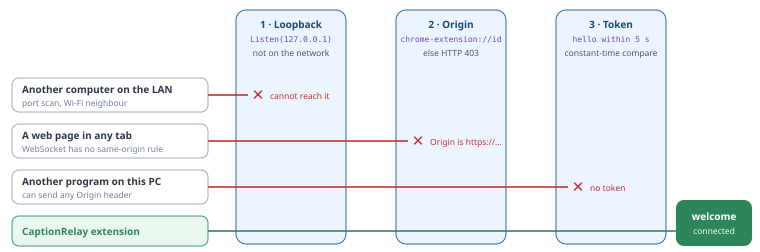

سرور WebSocket تنها جایی است که سیستم از مرز اعتماد عبور میکند. هر کسی که به آن وصل شود میتواند متن دلخواه را به اسم کاربر در Gemini ارسال کند، و هر کسی که بهجای افزونه وصل شود، متن مکالمه را دریافت میکند. پس قبل از کد، مدل تهدید نوشته شد: چه کسانی ممکن است سعی کنند وصل شوند؟

127.0.0.1 گوش میدهد، نه روی همهی کارتهای شبکه. کامپیوتر دیگری
در همان شبکه حتی نمیتواند اتصال را شروع کند.ws://127.0.0.1:47321 وصل شود. ولی مرورگر هدر Origin را خودش میگذارد و صفحه
نمیتواند آن را جعل کند. سرور فقط chrome-extension://<id> را میپذیرد و بقیه را با 403 رد میکند. با
allowedExtensionIds میشود فقط شناسهی افزونهی خودمان را مجاز کرد.hello با توکن درست باشد؛ وگرنه پیام error و بستن اتصال با کد 1008.
توکن ۳۲ بایت تصادفی رمزنگاریشده است (۴۳ کاراکتر base64url، یعنی ۲۵۶ بیت) و با
CryptographicOperations.FixedTimeEquals مقایسه میشود.مقایسهی معمولی رشته در اولین کاراکتر متفاوت متوقف میشود؛ پس زمان پاسخ، کمی دربارهی درستی پیشوند توکن اطلاعات میدهد. روی loopback این حمله بعید است، ولی هزینهی جلوگیری از آن یک خط کد است. برای کد امنیتی، انتخاب پیشفرض درست ارزانتر از بحث دربارهی احتمال است.
key) دارد، پس شناسه روی هر کامپیوتر همان
hpmjjnjmlhbolpmeafdkmdldlfmoaaee است و فهرست مجاز معنا پیدا میکند.config.json، sessions و logs در .gitignore هستند.
برنامهی مخربی که با همان حساب کاربری اجرا میشود، میتواند config.json را بخواند یا اصلاً صفحهکلید را
ضبط کند؛ هیچ اپ دسکتاپی نمیتواند در برابر آن از خودش دفاع کند. این مرز صریحاً نوشته شد تا پیچیدگی بیفایده
(مثلاً رمزنگاری توکن روی دیسک) اضافه نشود.
تستهای یکپارچه با سوکت واقعی: توکن غلط، نبودن hello، بودن Origin وب، Origin بدون شناسه و شناسهی خارج از فهرست همه رد شدند. در اجرای واقعی هم توکن غلط و Origin وب رد شدند.
The WebSocket is the only trust boundary, so I wrote a threat model first. Binding to loopback stops other machines. Because WebSockets are not covered by the same-origin policy, any web page could connect to localhost, so the server only accepts chrome-extension origins, which pages cannot forge. A local process can forge the Origin header, so the first message must carry a 256-bit random token, compared in constant time. Logs never contain transcript text, and the token only appears as a hash fingerprint.